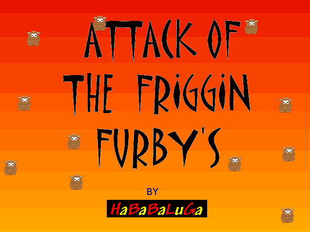
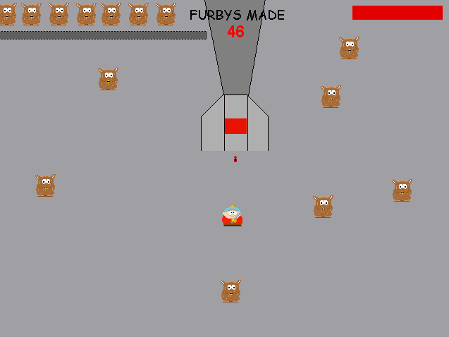
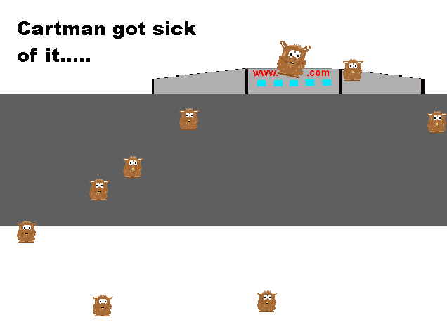

Attack of the Friggin' Furbys
HaBaBaLuGa
A repetitive game in which Furbys take over South Park. Cartman grows sick of them, and heads to their factory with a baseball bat to sort them out. Switch the machine off to decrease the number made, while destroying all the Furbys in the room without being attacked. A direct, stolen rip-off of a level from Subwoofer's South Park Star Wars.
Downloads Direct Download - 81.6 kB Internet Archive Link2024 South Park Gaming